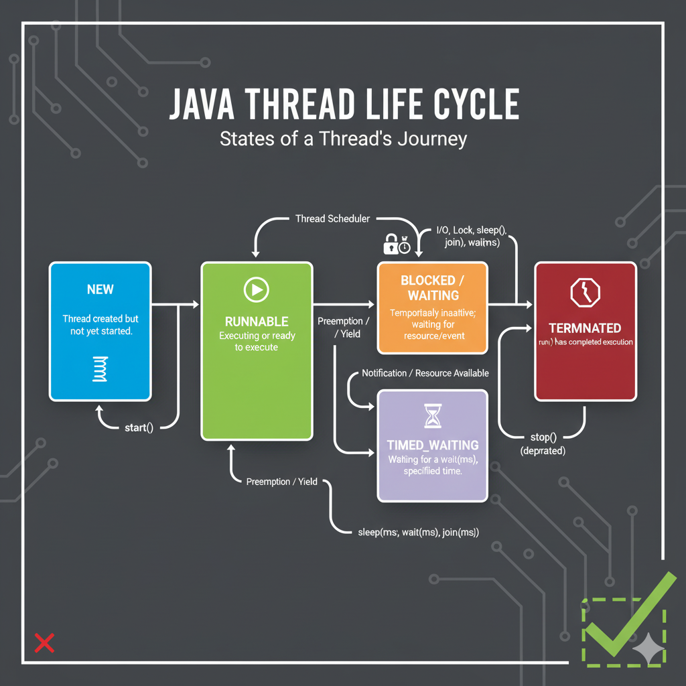

In Java a 2D array can be an array of arrays, allowing rows to have different lengths (a jagged array). You initialize each row separately and fill values accordingly. It uses less memory when rows differ significantly in size.
// File: JaggedArrayDemo.java
import java.util.Arrays;
public class JaggedArrayDemo {
public static void main(String[] args) {
// create jagged array with 6 rows of varying sizes
int[][] A = new int[6][];
A[0] = new int[6];
A[1] = new int[3];
A[2] = new int[6];
A[3] = new int[4];
A[4] = new int[5];
A[5] = new int[2];
// Fill rows with sample values (row index *10 + col index)
for (int i = 0; i < A.length; i++) {
for (int j = 0; j < A[i].length; j++) {
A[i][j] = i * 10 + j;
}
}
// print rows
for (int i = 0; i < A.length; i++) {
System.out.println("Row " + i + " (" + A[i].length + "): " + Arrays.toString(A[i]));
}
}
}
Cumulative frequency is a running total of frequencies. For each class interval we add its frequency to the sum of previous frequencies. It helps compute percentiles and cumulative distribution.
// File: CumulativeFrequency.java
import java.util.Arrays;
public class CumulativeFrequency {
public static void main(String[] args) {
// frequencies for intervals: 10-20, 30-40, 40-50, 50-60, 60-70
int[] freq = {14, 15, 20, 25, 25};
int[] cum = new int[freq.length];
cum[0] = freq[0];
for (int i = 1; i < freq.length; i++) {
cum[i] = cum[i - 1] + freq[i];
}
System.out.println("Frequencies: " + Arrays.toString(freq));
System.out.println("Cumulative: " + Arrays.toString(cum));
}
}
Inheritance allows a subclass to reuse and extend fields and methods of a superclass, promoting code reuse. Access modifiers (public/protected/default/private) determine which members are visible to subclasses and other classes and thus influence what can be inherited or overridden.
// File: InheritanceAccessDemo.java
class Parent {
public int pub = 1;
protected int prot = 2;
int pkg = 3; // default (package-private)
private int priv = 4;
public void show() { System.out.println("Parent show()"); }
}
public class InheritanceAccessDemo extends Parent {
public static void main(String[] args) {
InheritanceAccessDemo obj = new InheritanceAccessDemo();
System.out.println("public: " + obj.pub);
System.out.println("protected: " + obj.prot);
System.out.println("default/package: " + obj.pkg);
// private is not accessible here: cannot reference obj.priv
obj.show();
}
}
The super keyword references the immediate superclass and is used to call a superclass
constructor, invoke an overridden method, or access a hidden field. It helps initialize parent state
and reuse parent behavior inside subclasses.
// File: SuperDemo.java
class Animal {
String name;
Animal(String n){ this.name = n; System.out.println("Animal created: "+n); }
void speak(){ System.out.println("Animal speaks"); }
}
public class SuperDemo extends Animal {
SuperDemo(){ super("Generic"); System.out.println("SuperDemo created"); }
void speak(){ super.speak(); System.out.println("SuperDemo speaks too"); }
public static void main(String[] args){
SuperDemo s = new SuperDemo();
s.speak();
System.out.println("Name from parent via field: " + s.name);
}
}
Use a try/catch block to validate input and throw an exception for invalid values. A finally block is useful for cleanup (closing Scanner, files). Use appropriate exception types (IllegalArgumentException for invalid values) to communicate errors clearly.
// File: RangeValidator.java
import java.util.Scanner;
public class RangeValidator {
public static void main(String[] args) {
Scanner sc = new Scanner(System.in);
System.out.print("Enter an integer (0-30): ");
int num = sc.nextInt();
try {
if (num < 0 || num > 30) {
throw new IllegalArgumentException("Invalid input: " + num + " (Allowed: 0-30)");
}
System.out.println("Valid input: " + num);
} catch (IllegalArgumentException e) {
System.out.println("Error: " + e.getMessage());
} finally {
sc.close();
System.out.println("Scanner closed (cleanup).");
}
}
}
25:
Valid input: 25
Scanner closed (cleanup).
If user enters -5:
Error: Invalid input: -5 (Allowed: 0-30)
Scanner closed (cleanup).
Checked exceptions are enforced at compile-time and must be handled or declared (IOException, ClassNotFoundException, InterruptedException). Unchecked exceptions (subclasses of RuntimeException) occur at runtime — programmer can handle them but not forced to (NumberFormatException, ArithmeticException).
// File: ExceptionClassifier.java
public class ExceptionClassifier {
public static void main(String[] args) {
System.out.println("NumberFormatException -> Unchecked");
System.out.println("ArithmeticException -> Unchecked");
System.out.println("InterruptedException -> Checked");
System.out.println("IOException -> Checked");
System.out.println("ClassNotFoundException-> Checked");
}
}
System.out is Java's standard output PrintStream. println() prints text
followed by a newline and is commonly used to display results or messages on console.
// File: HelloWorld.java
public class HelloWorld {
public static void main(String[] args) {
System.out.println("Hello World");
}
}
java.util contains core utility classes (collections, Scanner, Date, etc.).
Scanner reads tokens from input streams and has methods next(),
nextInt(), nextDouble(), and nextLine() tailored to read
different kinds of input.
// File: ScannerDemo.java
import java.util.Scanner;
public class ScannerDemo {
public static void main(String[] args) {
Scanner sc = new Scanner(System.in);
System.out.print("Enter a word: ");
String word = sc.next(); // next() reads single token
System.out.print("Enter an int: ");
int i = sc.nextInt(); // nextInt() reads int
System.out.print("Enter a double: ");
double d = sc.nextDouble(); // nextDouble() reads double
sc.nextLine(); // consume endline
System.out.print("Enter a full line: ");
String line = sc.nextLine(); // nextLine() reads the rest of the line
sc.close();
System.out.println("You entered: " + word + ", " + i + ", " + d + ", [" + line + "]");
}
}
JavaFX handles mouse events using event handlers like setOnMouseClicked. Below is a
small JavaFX program that updates a label with the click coordinates. (Run with JavaFX on classpath
/ modules — in IDE like Eclipse add JavaFX library.)
// File: MouseEventFXDemo.java
import javafx.application.Application;
import javafx.scene.Scene;
import javafx.scene.control.Label;
import javafx.scene.layout.StackPane;
import javafx.stage.Stage;
public class MouseEventFXDemo extends Application {
@Override
public void start(Stage primaryStage) {
Label lbl = new Label("Click anywhere inside the window");
StackPane root = new StackPane(lbl);
root.setOnMouseClicked(e -> {
lbl.setText("Clicked at (" + (int)e.getSceneX() + ", " + (int)e.getSceneY() + ")");
});
Scene scene = new Scene(root, 400, 150);
primaryStage.setTitle("JavaFX Mouse Event Demo");
primaryStage.setScene(scene);
primaryStage.show();
}
public static void main(String[] args) {
launch(args);
}
}
Clicked at (120,45). In Eclipse, add JavaFX SDK and run as
JavaFX Application.String is immutable; modifications create new objects. StringBuffer (and
StringBuilder) are mutable and can be modified in-place; StringBuffer is synchronized
(thread-safe). For many concatenations in single-threaded code, prefer StringBuilder.
// File: StringVsBuffer.java
public class StringVsBuffer {
public static void main(String[] args) {
String s = "Hello";
s = s + " World"; // creates new String
StringBuffer sb = new StringBuffer("Hello");
sb.append(" World"); // modifies buffer in place
System.out.println("String: " + s);
System.out.println("StringBuffer: " + sb.toString());
}
}
Use start() to create a new thread; calling run() directly executes in the
current thread. You can create threads by extending Thread or by implementing
Runnable. Implementing Runnable is preferred when you need to extend
another class or separate task from thread control.
// File: ThreadCreationDemo.java
// Method 1: extend Thread
class ExtThread extends Thread {
public void run(){ System.out.println("ExtThread running: " + Thread.currentThread().getName()); }
}
// Method 2: implement Runnable
class MyRunnable implements Runnable {
public void run(){ System.out.println("Runnable running: " + Thread.currentThread().getName()); }
}
public class ThreadCreationDemo {
public static void main(String[] args) throws InterruptedException {
ExtThread t1 = new ExtThread();
Thread t2 = new Thread(new MyRunnable());
t1.start();
t2.start();
// Wait for threads to finish
t1.join();
t2.join();
System.out.println("Main thread exiting");
}
}
Explore more
Java thread states: NEW (created), RUNNABLE (ready), RUNNING
(executing), BLOCKED/WAITING (waiting for lock or notification), and
TERMINATED (finished). Transitions occur using start(), scheduler
preemption, sleep(), wait()/notify(), and normal completion.

Explore more